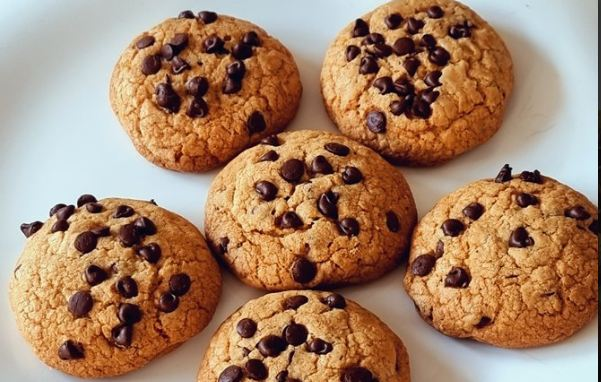

Cookies
Home

Este dulce proviene de Estados Unidos, donde su creadora, la propietaria de un conocido restaurante de
Massachusetts, añadió trozos de chocolate a la masa porque había olvidado comprar chocolate en polvo. Su idea
original era que se derritieran, pero al final se encontró con una galleta esponjosa y un chocolate crujiente.
Este error fue todo un acierto, ya que empezaron a llegar clientes deseosos de probar aquel manjar tan original.
Ingredientes
- 115 gramos de mantequilla a temperatura ambiente
- 75 gramos de azúcar blanca
- 100 gramos de azúcar moreno
- 1 huevo
- 1 chorrito de esencia de vainilla o azúcar avainillado
- 225 gramos de harina
- 1 cucharada de maicena
- 1 cucharada de levadura
- 170 gramos de chips de chocolate negro o chocolate blanco
- Una pizca de sal
Intrucciones
- 1.- Parece un poco complejo pero son muy sencillas de hacer. Lo primero que haremos será mezclar la
mantequilla que estará a temperatura ambiente con el azúcar hasta obtener una mezcla homogénea.
- 2.- Seguidamente agregamos el huevo y la esencia de vainilla. Seguimos mezclando.
- 3.- Continuamos con los ingredientes secos. En este caso debemos tamizarlos ya que para los postres es
mejor siempre tamizar la harina. Incorporamos la harina, la maicena y la pizca de sal. Mezclamos muy bien
hasta obtener una bola lisa.
- 4.- Añadimos los trocitos de chocolate y seguimos mezclando.
- 5.- Hacemos bolas de unos 35 – 40 gramos y dejamos enfriar. Podemos dejar
una hora en el frigorífico o 10 minutos en el congelador. Mientras tanto vamos precalentando el horno a
180º.
- 6.- Una vez frías las bolas, metemos la bandeja de horno con las bolitas de galleta sobre un papel de horno
o papel vegetal al horno durante unos 14 minutos.
- 7.- Dejamos enfriar sobre una rejilla y una vez frías nos disponemos a disfrutar.